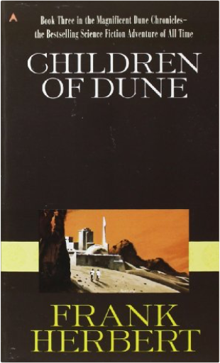
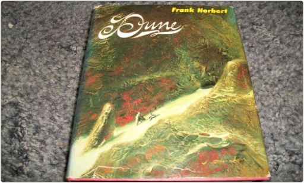
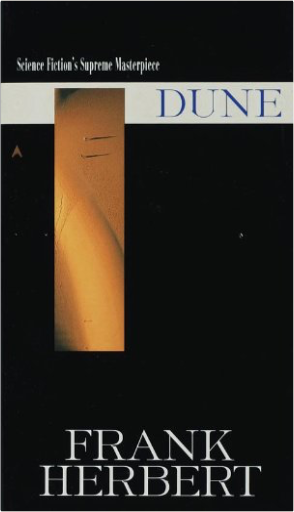
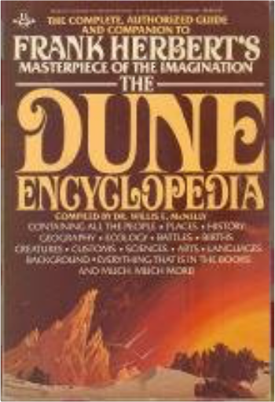
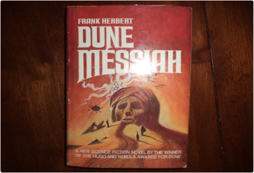
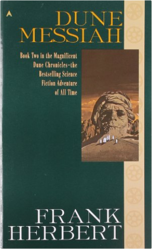
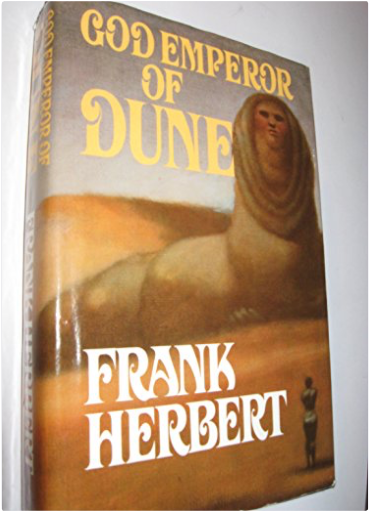
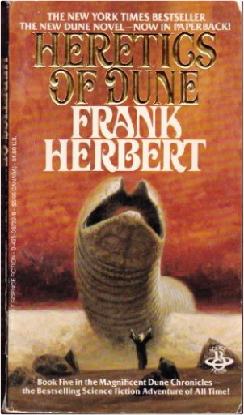
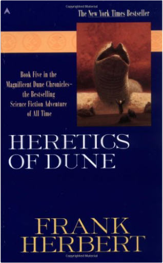
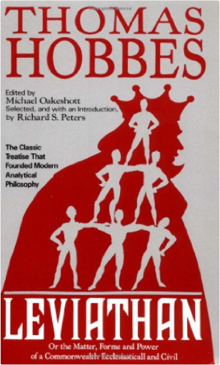

The Sherlock Holmes CompanionMichael Hardwick, Mollie Hardwick  Sherlock Holmes Companion, The, by Hardwick, Michael and Mollie The Road to Serfdom: Text and Documents—The Definitive EditionF. A. Hayek, Bruce Caldwell An unimpeachable classic work in political philosophy, intellectual and cultural history, and economics, The Road to Serfdom has inspired and infuriated politicians, scholars, and general readers for half a century. Originally published in 1944—when Eleanor Roosevelt supported the efforts of Stalin, and Albert Einstein subscribed lock, stock, and barrel to the socialist program—The Road to Serfdom was seen as heretical for its passionate warning against the dangers of state control over the means of production. For F. A. Hayek, the collectivist idea of empowering government with increasing economic control would lead not to a utopia but to the horrors of Nazi Germany and Fascist Italy. The Constitution of LibertyFriedrich A. Hayek "One of the great political works of our time, . . . the twentieth-century successor to John Stuart Mill's essay, 'On Liberty.'"—Henry Hazlitt, Newsweek   The desert planet of Arrakis has begun to grow green and lush. The life-giving spice is abundant. The nine-year-old royal twins, possesing their father's supernatural powers, are being groomed as Messiahs.  1965 Chillton Book hardcover, Frank Herbert (Children of Dune). Set on the desert planet Arrakis, Dune is the story of the boy Paul Atreides, who would become the mysterious man known as Muad'Dib. He would avenge the traitorous plot against his noble family—and would bring to fruition humankind's most ancient and unattainable dream.  Here is the novel that will be forever considered a triumph of the imagination. Set on the desert planet Arrakis, Dune is the story of the boy Paul Atreides, who would become the mysterious man known as Muad'Dib. He would avenge the traitorous plot against his noble family—and would bring to fruition humankind's most ancient and unattainable dream. |  The Dune Encyclopedia: The Complete, Authorized Guide and Companion to Frank Herbert's Masterpiece of the Imagination by Frank Herbert (Author), Willis E. McNelly (Compiler) Paperback - February 3, 1987 Product Details Paperback: 526 pages Publisher: Berkley Books; 1st edition (February 3, 1987) Language: English ISBN-10: 0425068137 ISBN-13: 978-0425068137 Product Dimensions: 8.8 x 6 x 1.5 inches Shipping Weight: 1.4 pounds Topics: Dictionaries; Dictionaries, indexes, etc; Fiction; General; Herbert, Frank; Science Fiction; Science fiction, American  An epic of imperial intrigue that spans the universe.  Dune Messiah continues the story of the man Muad'dib, heir to a power unimaginable, bringing to completion the centuries-old scheme to create a super-being.  Centuries have passed on Dune, and the planet is green with life. Leto, the son of Dune's savior, is still alive but far from human, and the fate of all humanity hangs on his awesome sacrifice...  The planet Arrakis—now called Rakis—is becoming desert again. The Lost Ones are returning home from the far reaches of space. The great sandworms are dying. And the children of Dune's children awaken from empire as from a dream, wielding the new power of a heresy called love..  With more than ten million copies sold, Frank Herbert's magnificent Dune books stand among the major achievements of the human imagination. In this, the fifth and most spectacular Dune book of all, the planet Arrakis—now called Rakis—is becoming desert again. The Lost Ones are returning home from the far reaches of space. The great sandworms are dying. And the children of Dune's children awaken from empire as from a dream, wielding the new power of a heresy called love...  Your most worthy Brother Mr SIDNEY GODOLPHIN, when he lived, was pleas'd to think my studies something, and otherwise to oblige me, as you know, with reall testimonies of his good opinion, great in themselves, and the greater for the worthinesse of his person. For there is not any vertue that disposeth a man, either to the service of God, or to the service of his Country, to Civill Society, or private Friendship, that did not manifestly appear in his conversation, not as acquired by necessity, or affected upon occasion, but inhaerent, and shining in a generous constitution of his nature. Therefore in honour and gratitude to him, and with devotion to your selfe, I humbly Dedicate unto you this my discourse of Common-wealth. I know not how the world will receive it, nor how it may reflect on those that shall seem to favour it. For in a way beset with those that contend on one side for too great Liberty, and on the other side for too much Authority, 'tis hard to passe between the points of both unwounded. But yet, me thinks, the endeavour to advance the Civill Power, should not be by the Civill Power condemned; nor private men, by reprehending it, declare they think that Power too great. Besides, I speak not of the men, but (in the Abstract) of the Seat of Power, (like to those simple and unpartiall creatures in the Roman Capitol, that with their noyse defended those within it, not because they were they, but there) offending none, I think, but those without, or such within (if there be any such) as favour them. That which perhaps may most offend, are certain Texts of Holy Scripture, alledged by me to other purpose than ordinarily they use to be by others. But I have done it with due submission, and also (in order to my Subject) necessarily; for they are the Outworks of the Enemy, from whence they impugne the Civill Power. If notwithstanding this, you find my labour generally decryed, you may be pleased to excuse your selfe, and say that I am a man that love my own opinions, and think all true I say, that I honoured your Brother, and honour you, and have presum'd on that, to assume the Title (without your knowledge) of being, as I am, |

John's Library
Collection Total:
163 Items
163 Items
Last Updated:
Apr 7, 2017
Apr 7, 2017
 Made with Delicious Library
Made with Delicious Library